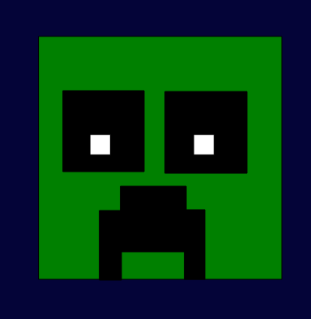

Meus Projetos

Pingu: Escape The School
Um jogo 2D, onde você controla o personagem pingu, que tem que fugir da rotina chata da escola.

Friday Night Funkin VS Brazilian Hatsune Miku
Uma modificação de um jogo 2D, onde você controla Boyfriend, em que sempre vai a outros multiversus para cantar.

Projeto Creeper p5.js
Uns dos projetos que mais gostei de fazer no P5.JS